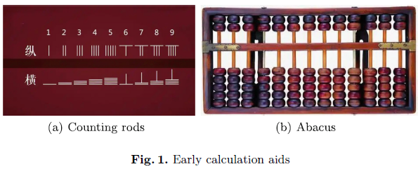
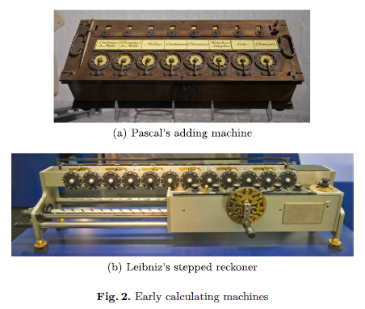
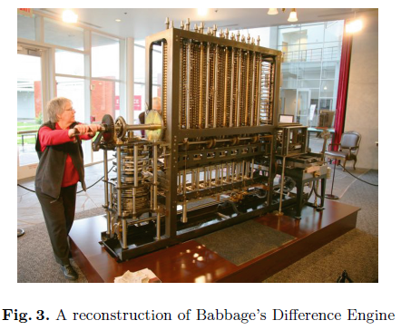

Логика в программировании#
Конспект статьи Liu et al. - From logic to programming (2025)
Математическая логика - это естественное основание компьютерных наук и компьютерных систем. Вычислительные модели и языки программирования представляют собой формально-логические системы. Выполнение программ следует рассматривать в свете логических выводов.
Статья выявляет, как в процессе возникновения фундаментальных проблем в логике, математике и теории вычислений образовалась современная наука и технологии. Наряду с философскими следствиями теоремы Гёделя о неполноте, языки формальных логических систем, как и построение доказательства теорем с помощью вывода из аксиом, приводят к неполноте возможностей логического выражения и умозаключений по сравнению с человеческой интуицией, восприятием и сознанием. Пожалуй, это фундаментальные факторы, отличающие человеческий интеллект от машинного (т.е. ИИ).
Введение#
Развитие логики и вычислений в нашей цивилизации отражает эволюцию того, как мы мыслим, как происходит обработка информации и решение проблем. От древних философских изысканий к современным технологическим инновациям, логика и вычисления отражают интеллектуальное, технологическое и социальное развитие.
Эта статья представляет обзор следующих направлений.
Истоки и формализация логики. Обсуждается логика, основанная на естественном языке. Естественный язык имеет свои ограничения. Аристотель сформулировал формальную логику, включающую силлогизмы. Обсуждаются принципы символической логики. Возникновение математической логики после работ Гильберта и др. по формальным языкам, системам доказательств и моделям. В дальнейшем возникла метатеория формально-логических систем, она затронула такие фундаментальные вопросы, как: непротиворечивость логических систем, корректность, адекватность, полнота и разрешимость. Мы обсудим теорему Гёделя о неполноте и ее философские следствия, включая творческие способности человека и машины.
Возникновение современных моделей вычислений. Развитие современных вычислительных моделей последовало за ответом на программу Гильберта после доказательства теорем Гёделя. С развитием нашей цивилизации стали развиваться средства вычислений. Ранняя история вычислительных приборов включает изобретение абака и пр. в работах Паскаля, Лейбница и Бэббиджа. Определение рекурсивных функций было дано Гёделем, что стало “поворотной точкой” между логикой и вычислениями. Впоследствии в работах Аккермана, Клини и Чёрча сформировалась теория вычислимости. Разработанное Чёрчем λ-исчисление продемонстрировало, что сформулированная Гильбертом и Аккерманом проблема разрешимости не может быть решена, что приводит к понятию вычислимости. Примерно в то же время Тьюринг предложил машины Тьюринга, чтобы лучше прояснить понятие вычислимой функции. И хотя главной целью Тьюринга было показать, что проблема разрешимости Гильберта и Аккермана не может быть решена, его работы сформировали перспективы для проведения вычислений. В дальнейшем с помощью тезиса Чёрча и тезиса Тьюринга-Чёрча было доказано, что три модели - рекурсивные функции, λ-исчисление и машины Тьюринга - эквивалентны в своей вычислительной способности. Вместе эти модели стали теоретическим основанием современных цифровых вычислений, хотя изначально их цель была в том, чтобы найти ответы на вопросы, поставленные в программе Гильберта. Теоретические модели вычислений совершили революцию в области вычислений. Однако все они имеют логическую природу и поэтому обладают ограничениями, характерными для формальных систем, как следует из теорем Гёделя и теорем о неразрешимости Чёрча и Тьюринга. Эти ограничения касаются глубоких вопросов о человеческом и искусственном интеллекте, способности ИИ к созданию инноваций, логическом выводе, планировании и объяснимости систем искусственного интеллекта.
Появление цифровых компьютеров и теории языков программирования. Середина XX века ознаменовалась созданием программируемых компьютеров, начиная с машин таких, как ENIAC и Colossus. Архитектура фон Неймана остается основой современных компьютеров, делая возможной автоматизацию сложных вычислений, что привело к цифровой революции. С тех пор произошло существенное развитие языков программирования и инструментальных платформ для разработки, благодаря эволюции программных абстракций. Сначала произошел прогресс от машинных языков к символическим ассемблерам и затем к языкам программирования высокого уровня с компиляторами и интерпретаторами; далее возникли абстрактные типы данных, модульность, объектно-ориентированное программирование и т.д. Следовательно, проектирование и реализация языков программирования стали центральной частью компьютерных наук и системной инженерии. Мы обсудим естественную взаимосвязь между математической логикой, моделями вычислений и языками программирования. Языки программирования - это формальные языки, их синтаксис и семантика определяется аналогично языкам формальной логики. Эта взаимосвязь подтверждает мысль, что всякое вычисление можно представить как построение доказательства, что было показано Тьюрингом и Постом. Чтобы это проиллюстрировать, мы введем минимальный (но полный по Тьюрингу) язык программирования вместе с операциональной семантикой языка, денотационной семантикой и аксиоматической семантикой в логике Хоара. Мы обсудим взаимосвязь между этими семантическими моделями и то, как они соотносятся к алгебраической семантикой.
В заключении обсуждается, как разрабатывать основанные на логике теории для сегодняшних компьютерных систем. Новейшие разработки в аппаратном обеспечении, такие как разработка транзисторов и эволюция языков программирования высокого уровня, сделали возможным повсеместное распространение вычислительных систем в обществе. От ранних компьютеров размером с комнату до сегодняшних компактных и взаимосвязанных устройств, вычислительные мощности расширились до возможности поддержки глобальных коммуникаций, коммерции и инноваций в области искусственного интеллекта. Сейчас сообщество столкнулось с новыми проблемами, которые связаны с разработкой теорий, основанных на логике, созданием методов и инструментов для понимания и развития этих систем.
Формализация логики#
Логика - учение об искусстве, теории, методах, способах и инструментах для рассуждения и принятия решений. Прежде всего, это относится к определению правильности понятий, а также истинности или ложности высказываний.
Термин “логическая система” обычно относится к специальной системе, состоящей из правил формулирования, рассуждения или доказательства утверждений.
Логика охватывает множество областей, от науки, инженерии и технологии до лингвистики, гуманитарных и социальных наук, права. Например, определяя понятие, необходимо уточнить и оценить его правильность, чтобы удостовериться в его осмысленности. Делая утверждение или суждение, всегда ставится вопрос о его логичности.
Зачем нужна логика? Всякая система: инженерное устройство, социальная организация или отдельный человек - ведет себя согласно определенной логике. Последовательность суждений обеспечивает гармоничное и правильное функционирование при проектировании, использовании или интеграции любой системы. Прикладные концепции понятности (объяснимости), достоверности и надежности берут свое начало в логике. Логическая непротиворечивости, целостность и полнота упомянутых систем имеют решающее значение для их стабильности, эффективности и надежности.
Формализация логики. Древние участники дебатов и философы изначально пользовались логикой в рамках естественных языков. Неточная структура естественного языка приводит к неоднозначности трактовок, что служит причиной парадоксов. Китайский парадокс: “Если белые лошади - это лошади, то черные лошади - это лошади. Значит, белые лошади - это черные лошади.”
При отсутствии логической структуры сложно избежать в рамках высказывания ссылок на само же это высказывание. Парадокс лжеца: “это утверждение ложно”. Парадокс брадобрея, или парадокс Рассела: противоречие с возможностью определить любое множество как “коллекцию различимых объектов”. Если определить множество всех множеств, не содержащих самого себя в качестве элемента, \(Y = \{S \colon S \notin S\}\), а потом спросить, принадлежит ли это множество самому себе, т.е. \(Y \in Y\), приходим к противоречию.
Эти и прочие парадоксы приводят к проблеме формулирования процессов рассуждений и проверки их правильности. Как сказано выше, в рамках естественного языка это затруднительно. Поэтому необходима более структурированная и формальная система, чтобы исключить противоречия и непоследовательность в рассуждениях.
Парадокс Рассела и аксиоматизация теории множеств. Парадокс Рассела стал причиной кризиса в теории множеств как основании математики. За ним последовали многочисленные усилия, направленные на то, чтобы обойти этот парадокс.
Рассел разработал теорию типов, которая предлагает рассматривать иерархическую структуру, состоящую из множеств, определенных на разных слоях. Множество, находящееся на некотором слое, не может быть определено через множества, находящиеся на более нижних слоях. Стоит отметить, что архитектуры многих инженерных систем построены по аналогичному иерархическому принципу.
Другой подход известен как теория множеств Цермело. Она предшествовало современной теории Цермело-Френкеля (ZF) и ее расширениям, таким, как теория множеств Неймана-Бернайса-Гёделя (NBG). На сегодняшний день, в сочетании с аксиомой выбора (аббревиатура ZFC), теория множеств ZF служит стандартной формой аксиоматической теории множеств. Эта теория рассматривается как наиболее важная составляющая оснований математики.
Программа Гильберта и теорема Гёделя о неполноте. В конце XIX - начале XX в. Гильберт привлек значительное внимание к основаниям математики. Сосредоточившись на геометрических аксиомах, Гильберт высказал идею, чтобы свести вопрос о непротиворечивости геометрии к непротиворечивости анализа, интерпретируя геометрическую систему в рамках действительной плоскости. Однако доказательство непротиворечивости его аксиоматизации столкнулось с значительными трудностями ввиду допущений анализа Дедекинда, примерно как и с парадоксом Рассела в теории множеств.
Гильберт подчеркивал важность доказательств непроворечивости аксиоматических систем: “Главное требование теории аксиом должно идти дальше (чем просто избегать известных парадоксов), а именно аксиомы должны давать возможность показать, что в каждой области знания противоречия, основанные на лежащей в ее основе системе аксиом, абсолютно невозможны.”
Помимо вопроса о непротиворечивости, Гильберт интересовался и другими проблемами аксиоматизации, такими, как “разрешимость всякого математического вопроса”.
Сформулированная Гильбертом программа предназначалась для разрешения фундаментального кризиса в математике того времени. Вот цели программы Гильберта:
Формальная логическая система для математики: все математические утверждения следует выражать на точном формальном языке и действовать с ними в соответствии с корректно определенными правилами.
Полнота: доказательство, что все истинные математические утверждения можно вывести в рамках введенного формализма.
Непротиворечивость: доказательство, что в рамках формализма не возникает противоречий. В идеале это доказательство должно использовать только “конечностные” рассуждения о конечных математических объектах.
Консервативность: доказательство, что всякий результат о “реальных объектах”, полученный с помощью рассуждений над “идеальными объектами” (такими, как несчетные множества) также можно доказать, не прибегая к идеальным объектам.
Разрешимость: должен существовать алгоритм, способный определить истинность либо ложность математических утверждений.
Однако в 1930 г. Гёдель показал, что большая часть целей этой программы недостижима. Это вытекает из теорем Гёделя о неполноте и результатов Чёрча и Тьюринга о неразрешимости. Теорема Гёделя дает понять, что всякая непротиворечивая логическая система, с помощью которой можно выразить арифметику, будет неполной; всегда будут истинные утверждения в рамках этой системы, которые не могут быть доказаны. Несуществование алгоритма, выясняющего истинность произвольного математического утверждения, показано Чёрчем и Тьюрингом - таким образом, проблема разрешимости Гильберта-Аккермана (известная также как Entscheidungsproblem) не имеет решения.
Теория вычислимости. Хотя программа Гильберта оказалась невыполнимой, многие исследования в математической логике и математике являются продолжением этой программы. Стремление формализовать математику играло важную роль в обходе многочисленных математических парадоксов и помогло создать новые области математики и науки.
Влияние формальной логики и ее формализации выходит далеко за рамки самой математики; благодаря логике возникли и развились компьютерные науки. Доказательство Гёделем его первой теоремы о неполноте ознаменовало начало развития теории рекурсивных функций. Теория рекурсивных функций и доказательство теоремы о неполноте сильно повлияли на развитие λ-исчисления и определение машин Тьюринга, которые изначально предназначались для того, чтобы показать, что проблема разрешимости Гильберта-Аккермана не имеет решения. Теория рекурсивных функций, λ-исчисление и теория машин Тьюринга формируют современную теорию вычислимости.
Компьютерные науки и программная инженерия. Модель компьютера с хранимой программой, которая носит название фон-неймановской архитектуры, была предложена фон Нейманом в 1945 г. Она была основана на модели универсальной машины Тьюринга. Эта концепция открыла дорогу к разработке языков программирования и абстракций программного обеспечения, и формальная логика здесь - твердое основание.
Ранняя форма формальной логики. У естественного языка есть свои ограничения, затрудняющие правильные рассуждения и планирование. Естественного языка недостаточно для строгого мышления, с его помощью затруднительно сформулировать процессы рассуждений и определить правильность рассуждений. Развитие формальной логики началось с основополагающей работы Аристотеля. Мыслитель предложил три ключевые идеи, на которых построена формальная логика. Его идеи оказали значимое влияние на логику, философию, современную науку и технику.
Одна из идей Аристотеля - отделить форму рассуждений от их содержания. Это значит, что правильность рассуждений определяется прежде всего их формой, а не конкретным содержанием предпосылок. Это ранняя идея формализации логических выводов, в которых рассуждения касаются только структуры выводов. Другими словами, корректность логических рассуждений зависит только от формы выводов и не зависит от содержания предмета.
Явные посылки в рассуждениях. Аристотель подчеркивал, что для того чтобы рассуждение было правильным, все посылки должны быть указаны явно. Это требование гарантирует ясность и строгость логических выводов. При любом пропуске посылок рассуждения будут неполными, или это приведет к скрытым допущениям, что вводит неясность выводов и подрывает их логическую правильность.
Искусственные символы. Аристотель объяснил ограничения естественного языка и предложил использовать искусственные символы. Формальные языки, как в современной формальной логике, он изобретать не стал. Аристотель использовал греческие буквы в своих обозначениях.
В своей работе “Первая аналитика” Аристотель ввел понятие силлогизма. Впоследствии на принципы Аристотеля опирался логик Фреге в своей книге “Язык формул для чистой мысли, основанный на арифметике”. Подход Аристотеля к логике отражает его философию в целом, известную как “Метафизика”. В философии Аристотеля все вещи представляются как единство формы и содержания.
Форма: Структура и организация объекта. Определяет первичную функцию, назначение и сходство между объектами одного типа.
Содержание: Разные части, из которых состоит объект. Определяет конкретные свойства объекта, характеристики и индивидуальность.
Для понимания природы любого объекта нужно учесть как форму, так и содержание. Форма дает организационную структуру, а содержание отражает отдельные характеристики объекта. Это соотношение между формой и содержанием имеет далеко идущие следствия за рамками логики и математики (где важны изоморфизмы и гомоморфизмы между алгебраическими структурами), расширяясь до гуманитарных и естественных наук, техники. В этих дисциплинах организационная структура, системная архитектура и алгебраические структуры часто проявляют гомоморфизмы и изоморфизмы, отражая единство формы и содержания. Эти идеи имеют фундаментальное значение в проектировании целостных и эффективных систем, относясь будь то к человеческим организациям, научным моделям или техническим структурам.
Рассуждения посредством аристотелевских силлогизмов. Аристотель, основатель формальной логики, ввел силлогизмы как способ формулирования рассуждений в рамках логических выводов. По Аристотелю, силлогизм - это “рассуждение, в котором предполагаются определенные вещи, причем из них с необходимостью вытекает нечто отличное от предполагаемых вещей, потому что эти вещи таковы”.
Центральная часть этого определения - “с необходимостью вытекает”. Это соответствует современному понятию логического следствия: мы говорим, что \(X\) с необходимостью вытекает из \(Y\) и \(Z\), если ситуация, в которой \(X\) ложна при том, что \(Y\) и \(Z\) одновременно истинны, является невозможной. Такой вывод оказывается правильным по своей форме.
В формальной логике предполагаемые вещи называются посылками (т.е. \(Y\) и \(Z\)), а другая вещь, с необходимостью вытекающая из посылок, - это заключение. Чтобы рассуждение было правильным, посылки и заключение должны быть связаны подходящим образом. Вывод по силлогизму состоит из главной посылки, побочной посылки и заключения, которое с необходимостью следует из посылок. Вот пример вывода по силлогизму:
Главная посылка: Все люди смертны.
Побочная посылка: Цинь Шихуанди - человек.
Заключение: Следовательно, Цинь Шихуанди смертен.
Это рассуждение верно, потому что заключение логически следует из посылок, независимо от конкретного содержания. Именно форма вывода, в которой две посылки приводят к заключению, обеспечивает правильность рассуждений. Пример неправильного силлогизма:
Главная посылка: Некоторые музыканты - пианисты.
Побочная посылка: Лан Лан - музыкант.
Заключение: Следовательно, Лан Лан - пианист.
Вывод неправилен, поскольку только некоторые, но не обязательно все, музыканты - пианисты. Поэтому могут существовать примеры музыкантов, которые не являются пианистами. Даже хотя Лан Лан - известный китайский пианист, такой вывод не следует с необходимостью из этих двух посылок.
Назовем сказуемое заключения основной частью вывода (обозначим ее через \(P\)), сказуемое побочной посылки - это средняя часть вывода (обозначим ее через \(M\)), и подлежащее заключения - это побочная часть вывода (обозначим ее через \(S\)). Средняя часть (M) входит в обе посылки, но не входит в заключение, она служит связкой между подлежащим и сказуемым. Стандартный силлогизм можно сформулировать с помощью символов так:
Главная посылка: Все \(M\) суть \(P\).
Побочная посылка: \(S\) суть \(M\).
Заключение: \(S\) суть \(P\).
Всего существует четыре различных конфигурации: \((MP, SM, SP)\), \((PM, SM, SP)\), \((MP, MS, SP)\), \((PM, MS, SP)\), причем слова “все” и “некоторые” (возможно, с частицей “не”) относятся к \(P, M, S\). Всего получаем 256 типов силлогизмов. Известно, что лишь 24 из них правильны.
Работа Аристотеля по силлогизмам лежит в основе разработки формально-логических систем, которые относятся к структуре выводов и не зависят от содержания. Сейчас нам ясно, что главной целью формализации логики является высочайший уровень абстракции, нейтрализация и универсализация субъектов рассуждения, а также механизация процесса рассуждения и проверка его правильности.
Формально-логические системы. Хотя логика силлогизмов Аристотеля заложила основы формальной логики, она не могла вполне достичь целей формализации, общности и механизации. Американский логик Льюис внес свой вклад в разработку символической логики, введя три ключевые характеристики, которым должна удовлетворять формальная логика:
Использование символов для понятий: В формальной логике символы представляют понятия. Например, символ \(\times\) обозначает умножение, и в языках программирования с той же целью пользуются символом *. Символы позволяют достичь абстракции и обобщенности логических рассуждений.
Метод логического вывода (дедукции): В формальной логике используется дедуктивный метод, позволяющий получить бесконечно много новых структур из конечного множества простых структур. Из нескольких основных структур получаются сложные процессы. Это обеспечивает возможность систематически получать новые выводы из принятых посылок.
Использование переменных: Переменные обозначают некоторый элемент заданного множества, что обеспечивает гибкость и абстрактность логических выражений. Переменные могут представлять любой объект в рамках заданной области, делая возможным обобщение в разных контекстах.
Мы можем определить, что составляет формально-логическую систему, согласно этим принципам.
Определение. Формально-логическая система \(\mathcal S\) определяется несколькими компонентами, которые вместе создают структурированную платформу для рассуждений. Вот ключевые компоненты формально-логической системы:
Алфавит: Множество символов, используемых в этой системе.
Формальная грамматика: Множество синтаксических правил, определяющих, как могут быть выстроены символы алфавита, чтобы образовать правильные предложения или формулы.
Правила вывода: Множество правил, определяющее, как одну формула можно пошагово вывести из заданного множества формул (оно может быть пустым), называемых посылками. Эти правила регламентируют процессы логического вывода в системе.
Правило с пустым множеством посылок называется аксиомой.
Итак, формальная система состоит из двух главных частей: формального языка и системы выводов (доказательств). Формальный язык обеспечивает структуру для выражения логических утверждений, а система выводов предлагает правила для получения новых утверждений и проверки правильности логических рассуждений.
Формально-логические системы упрощают точное формулирование и строгий анализ логических утверждений и их формальных доказательств, гарантируя, что выводы получены систематически и надежно. Изучение формально-логических систем также выявило важность формальных или полуформальных языков, таких, как математический язык, языки компьютерного программирования и языки спецификаций (или языки моделирования), вдобавок к формальным языкам логических систем. Если говорить о существенных преимуществах символических языков над прочими языками, в том числе естественными, можно процитировать Льюиса:
“… Во-вторых, идеографическая запись превосходит любую другую по точности. Многие идеи, выражаемые математическими символами, могут быть переданы обычным языком только с величайшими трудностями. Даже арифметика была бы сложной без идеограмм, а более высокие уровни были бы невозможны.” (“Обзор символической логики”, 1918 г.)
Формально-логические системы с гильбертовскими системами доказательств широко используются в науке. Как предложили Гильберт и Аккерман в книге “Принципы математической логики”, эти системы определяют аксиомы и правила вывода в схематической форме. В гильбертовских системах используется много схем аксиом и мало правил вывода.
В другом классе систем, называемых системами естественного вывода, напротив, вводится много правил вывода, но очень мало схем аксиом. Ниже мы представим вариант гильбертовской системы для исчисления предиктов первого порядка.
Определение. Язык логики предикатов первого порядка \(\mathcal L\) определяется с помощью следующих синтаксических категорий.
Алфавит \(\Sigma\), состоящий из таких символов:
\(A = \{a_1, a_2, \ldots \}\) - индивидные константы;
\(X = \{x_1, x_2, \ldots\}\) - индивидные переменные;
\(F = \{f_1^1, f_2^1, \ldots, f_1^2, f_2^2, \ldots \}\) - функциональные символы;
\(R = \{P_1^1, P_2^1, \ldots, P_1^2, P_2^2, \ldots \}\) - предикатные символы;
\(()\) - технические символы;
\(\forall\) - квантор общности;
\(\neg\), \(\to\) - логические связки.
Синтаксические правила:
Термы: \(t ::= a \;|\; x \;|\; f_i^n(t, \ldots, t)\), где \(a \in A\), \(x \in X\), \(f_i^n \in F\);
Атомарные формулы: \(AF ::= P^n_i(t, \ldots, t)\), где \(P_i^n \in R\);
Формулы: \(\varphi ::= Q \; | \; (\neg \varphi) \; | \; (\varphi \to \varphi) \; | \; (\forall x)\varphi\), где \(Q \in AF\).
Это определение записано с помощью формы Бэкуса-Наура (BNF), которая обычно используется для определения синтаксиса языков программирования. Вообще языки программирования и формально-логические языки определяются сходным образом.
Например, вот так выглядит язык первого порядка \(\mathcal N\) для арифметики:
Переменные: \(x_1, x_2, \ldots\)
Индивидные константы: \(a_1\) - это константа \(0\)
Предикат: \(P_1^2\) - это равенство \(=\)
Функции:
\(f_1^1\) - это функция следования
\(f_1^2\) - это сложение
\(f_2^2\) - это умножение
Важно отметить, что множество термов \(\mathcal T\) и множество формул \(\mathcal F\) являются рекурсивными. Следовательно, синтаксическая корректность терма или формулы - это разрешимое свойство. Это значит, что его можно проверить с помощью компьютерной программы.
Для языка первого порядка \(\mathcal L\) будем использовать систему доказательств \(\mathcal K_{\mathcal L}\) в виде гильбертовской системы со следующими 6 схемами аксиом и 2 правилами вывода:
Аксиомы:
(K1) \((\varphi \to (\psi \to \varphi))\)
(K2) \(((\varphi \to (\psi \to \theta)) \to ((\varphi \to \psi) \to (\varphi \to \theta)))\)
(K3) \((((\neg \varphi) \to (\neg \psi)) \to (\psi \to \varphi))\)
(K4) \((\forall x_i)\varphi \to \varphi\), где переменная \(x_i\) не имеет свободных вхождений в формулу \(\varphi\)
(К5) \((\forall x_i)\varphi \to \varphi(t)\), где терм \(t\) входит вместо всех свободных вхождений переменной \(x_i\) в формулу \(\varphi\)
(K6) \((\forall x_i)(\varphi \to \psi) \to (\varphi \to (\forall x_i)\psi)\), где переменная \(x_i\) не имеет свободных вхождений в формулу \(\psi\)
Правила вывода:
Modus Ponens (MP): \(\dfrac{\varphi, \; (\varphi \to \psi)}{\psi}\)
Обобщение (Gen): \(\dfrac{\varphi}{(\forall x_i)\varphi}\)
Формулы (K1)-(K6) и правила вывода (MP), (Gen) - это схемы, из которых получается бесконечно много примеров. Например, две следующие формулы - это примеры (K1):
\((p_1 \to (p_2 \to p_2))\)
\((((\neg p_1) \to p_3) \to (((\neg p_3) \to p_4) \to ((\neg p_1) \to p_3)))\)
Вот пример для правила вывода (MP):
\(\dfrac{(p_1 \to ((\neg p_2) \to (\neg p_3))), \;\; ((p_1 \to ((\neg p_2) \to (\neg p_3))) \to (p_3 \to p_4))}{(p_3 \to p_4)}\)
Неформальный анализ показывает, что все примеры 6 схем аксиом правильны. В том смысле, что они выполняются в любой интерпретации.
В формально-логической системе понятия рассуждения (как процесса) и вывода формализовано в виде доказательств. А результат процесса рассуждений определяется как теорема этой системы.
Определение. Для заданной формально-логической системы \(\mathcal S\) доказательство в этой системе определяется как конечная, непустая последовательность \(\varphi_1, \ldots, \varphi_n\) правильно построенных формул, таких, что каждая формула \(\varphi_i\) в этой последовательности - это либо аксиома, либо она выводится из предыдущих формул этой последовательности с помощью одного из правил вывода системы \(\mathcal S\). Последняя формула \(\varphi_n\) в доказательстве называется теоремой этой системы, обозначается \(\vdash_{\mathcal S} \varphi_n\).
Доказательства в формальной системе называются формальными доказательствами. Теоремы также формальны, поэтому не имеют предметного содержания. Согласно введенному определению, любой непустой префикс доказательства также является доказательством, и все формулы в доказательстве - это теоремы.
Пример формального доказательства в системе \(\mathcal K_{\mathcal L}\):
\((P_1^1(x_1) \to (P_2^2(x_1, x_2) \to P_1^1(x_1)))\) - из схемы аксиом (K1)
\(((P_1^1(x_1) \to (P_2^2(x_1, x_2) \to P_1^1(x_1))) \to ((P_1^1(x_1) \to P_2^2(x_1, x_2)) \to (P_1^1(x_1) \to P_1^1(x_1))))\) - из схемы аксиом (K2)
\(((P_1^1(x_1) \to P_2^2(x_1, x_2)) \to (P_1^1(x_1) \to P_1^1(x_1)))\) - по правилу (MP) из 1, 2
\((\forall x_1)((P_1^1(x_1) \to P_2^2(x_1, x_2)) \to (P_1^1(x_1) \to P_1^1(x_1)))\) - по правилу (Gen) из 3
\((\forall x_2)(\forall x_1)((P_1^1(x_1) \to P_2^2(x_1, x_2)) \to (P_1^1(x_1) \to P_1^1(x_1)))\) - по правилу (Gen) из 4
В формальном доказательстве конкретные примеры схем аксиом и схем правил вывода получаются в результате сопоставления шаблонов.
Можно видеть, что три ключевых аспекта аристотелевской логики выполняются для формальных доказательств. Например, отделение формы от содержания и требование явного указания всех посылок. Каждый тип силлогизмов можно формализовать в качестве правила вывода. Например, силлогизм из нашего текстового примера можно записать так:
\(\dfrac{(\forall x_i)(\varphi(x_i) \to \psi(x_i)), \;\; \varphi(a_i)}{\psi(a_i)}\)
Правильность данного правила вытекает из правильности формулы
\((((\forall x_i)(\varphi(x_i) \to \psi(x_i)) \land \psi(a_i)) \to \psi(a_i))\)
В качестве упражнения можно построить доказательство этой формулы как теоремы в системе \(\mathcal K_{\mathcal L}\).
Рассуждение в примере неправильного рассуждения можно формализовать следующим образом:
\(\dfrac{(\exists x_i)(\varphi(x_i) \land \psi(x_i)), \;\; \varphi(a_i)}{\psi(a_i)}\)
Легко понять, что это неправильное правило, и соответствующая формула не является теоремой:
\((((\exists x_i)(\varphi(x_i) \land \psi(x_i)) \land \varphi(a_i)) \to \psi(a_i))\)
Поэтому такое рассуждение будет неправильным.
Создание формальных доказательств непосредственно на основе аксиом и правил вывода является утомительным и сложным делом. Однако основная цель формализации логических выводов состоит в том, чтобы обеспечить строгость и систематичность изложения доказательств и обеспечить возможность механической проверки их достоверности. Кроме того, изучение теории доказательств также привело к разработке методов формального доказательства теорем. В частности, методы формального доказательства теорем быстро развивались благодаря исследованиям и разработке автоматизированных средств.
Метатеория формально-логических систем. Изучение интерпретаций (или семантики) и представлений, а также свойств доказательств в формально-логических системах - это ключевые аспекты металогики. Первый из них относится к теории моделей, второй - к теории доказательств. Всеобъемлющая цель состоит в том, чтобы изучить, как формальная логика и математика взаиосвязаны с формализмами и их областями применения.
Интерпретация формальных языков. Применяя формально-логическую систему к изучению интересующей области, всегда нужна интерпретация формул (предложений) формального языка как утверждений об этой области. Тем самым форма увязывается с содержанием предмета исследования. Интерпретация формулы относится к семантике (или смысловому значению) формулы в данной области. Следуя индуктивно синтаксису формального языка, производится сопоставление символическим элементам формального языка их семантики, то есть элементов предметной области. Давайте покажем, как вводится интерпретация языка \(\mathcal L\) гильбертовской системы логики первого порядка.
Определение. Интерпретация \(\mathcal I = (D, I)\) языка первого порядка \(\mathcal L\) состоит из носителя интерпретации \(D\), представляющего собой множество, а также многосортного отображения \(I\) из синтаксических категорий в элементы, функции и отношения, заданные на \(D\):
Семантика константных символов: \(I \colon A = \{a_1, \ldots\} \mapsto D\) - отображение из \(A\) в \(D\). Обозначаем \(I(a_i)\) через \(\overline{a_i}\) - это означивание символа \(a_i\).
Семантика функциональных символов: \(I \colon F \mapsto \{f^n \colon f^n \text{ - это }n\text{-арная функция на }D\}\). Это отображение сопоставляет каждому функциональному символу функцию из \(D\). Обозначаем \(I(f_i^k)\) через \(\overline{f_i^k}\) - это означивание символа \(f_i^k\).
Семантика предикатных символов: \(I \colon R \mapsto \{P^n \colon P^n \text{ - это }n\text{-арное отношение на }D\}\). Это отображение сопоставляет каждому предикатному символу отношения на \(D\). Обозначаем \(I(P_i^k)\) через \(\overline{P_i^k}\) - это означивание символа \(P_i^k\).
Для заданной интерпретации \(\mathcal I\) языка первого порядка можно определить значение термов и формул в рамках языка.
Определение. В рамках заданной интерпретации \(\mathcal I = (D, I)\) языка первого порядка \(\mathcal L\) оценка термов сопоставляет термам их значения из \(D\). Оценка формул сопоставляет формулам истинностные значения из множества \(\{tt, ff\}\). Формально, оценка \(\sigma\) термов языка \(\mathcal L\) - это отображение из множества термов \(\mathcal T\) в множество \(D\), т.е. \(\sigma \colon \mathcal T \mapsto D\), которое удовлетворяет следующим условиям:
\(\sigma(a_i) = \overline{a_i}\) для \(a_i \in A\);
\(\sigma(f_i^n(t_1, \ldots, t_n)) = \overline{f_i^n}(\sigma(t_1), \ldots, \sigma(t_n))\) для \(f_i^n \in F\).
Оценку термов можно расширить для оценки формул, которую также обозначим через \(\sigma\), это отображение \(\sigma \colon \mathcal F \to \{tt, ff\}\), такое, что:
\(\sigma(P_i^n(t_1, \ldots, t_n)) = tt\), если и только если \(\overline{P_i^n}(\sigma(t_1), \ldots, \sigma(t_n))\) выполняется в \(D\);
\(\sigma(\neg\varphi) = tt\), если и только если \(\sigma(\varphi) = ff\);
\(\sigma(\varphi \to \psi) = tt\), если и только если \(\sigma(\varphi) = ff\) или \(\sigma(\psi) = tt\);
\(\sigma((\forall x_i)\varphi) = tt\), если и только если \(\sigma'(\varphi) = tt\) для всякой оценки \(\sigma'\), совпадающей с \(\sigma\), кроме, возможно, переменной \(x_i\).
Например, можно определить интерпретацию \(\mathcal I\) для языка первого порядка \(\mathcal N\), задав следующие отображения: \(\overline{a_1}\) - это \(0\), \(\overline{f_1^1}\) - это функция следования (т.е. \(\overline{f_1^1} = x + 1\)), \(\overline{f_1^2}\) - это сложение, \(\overline{f_2^2}\) - это умножение, и \(\overline{P^2_1}\) - это отношение равенства “\(=\)”. При такой интерпретации смысловое значение формул можно проиллюстрировать следующим образом:
Формула \((\forall x_1)(\neg P_1^2(f_1^1(x_1), x_1))\) формально обозначает утверждение, что для всех \(x\) выполнено \(x + 1 \neq x\).
Формула \((\forall x_1)(\forall x_2)(P_1^2(f_1^2(x_1, x_2), f_1^2(x_2, x_1)))\) формально обозначает утверждение, что для всех натуральных чисел выполнено \(x_1 + x_2 = x_2 + x_1\) (т.е. что сложение коммутативно).
Формула \((\forall x_1)(\forall x_2)(\forall x_3)(P_1^2(f_2^2(x_3, f_1^2(x_1, x_2)), f_1^2(f_2^2(x_3,x_1), f_2^2(x_3,x_2))))\) обозначает закон дистрибутивности умножения относительно сложения: \((x_3 \times (x_1 + x_2)) = (x_3 \times x_1) + (x_3 \times x_2)\).
Все три формулы выполняются при любой оценке при указанной интерпретации.
Теперь мы поняли, что формально-логическая система имеет три составляющие: формальный язык, связанная с ним система доказательств и семантика (т.е. интерпретации).
Важные метатеоремы, касающиеся формально-логических систем. Введем основополагающие понятия формально-логических систем.
Определение. Пусть \(\mathcal I\) - интерпретация языка первого порядка \(\mathcal L\). Тогда:
Говорят, что формула \(\varphi\) выполняется на оценке \(\sigma\) при интерпретации \(\mathcal I\), обозначение \((\mathcal I, \sigma) \models \varphi\), если \(\sigma(\varphi) = tt\).
Формула \(\varphi\) называется выполнимой при интерпретации \(\mathcal I\), если существует оценка \(\sigma\), такая, что \((\mathcal I, \sigma) \models \varphi\).
Интерпретация \(\mathcal I\) называется моделью формулы \(\varphi\), если \(\varphi\) выполняется на каждой оценке при интерпретации \(\mathcal I\), обозначение \(\mathcal I \models \varphi\).
Формула \(\varphi\) называется общезначимой, обозначение \(\models \varphi\), если она выполняется при всех интерпретациях (т.е. каждая возможная интерпретация - модель формулы \(\varphi\)).
Эти основополагающие концепции приводят к следующим задачам:
Если заданы интерпретация и формула, удовлетворяет ли конкретная оценка формуле?
Если заданы интерпретация и формула, является ли формула выполнимой?
Является ли данная интерпретация моделью формулы?
Изучение этих проблем является центральным направлением в области разрешимости, а также тестирования и верификации программного обеспечения.
Пусть имеется логическая система \(\mathcal S\). Следующие метасвойства носят фундаментальный характер, касающийся соотношения между формальным языком и его семантикой, то есть между формальными спецификациями и моделями:
Непротиворечивость: Логическая система \(\mathcal S\) непротиворечива, если не существует такой формулы \(\varphi\), что как \(\varphi\), так и \(\neg\varphi\) являются теоремами \(\mathcal S\), то есть не бывает одновременно \(\vdash_{\mathcal S} \varphi\) и \(\vdash_{\mathcal S} \neg\varphi\).
Корректность: Логическая система \(\mathcal S\) корректна, если всякая теорема \(\mathcal S\) верна, т.е. если \(\vdash_S \varphi\), то \(\models\varphi\).
Адекватность: Логическая система \(\mathcal S\) адекватна, если всякая правильная формула - теорема этой системы, т.е. если \(\models\varphi\), то \(\vdash_{\mathcal S}\varphi\).
Полнота: Логическая система \(\mathcal S\) полна, если не бывает замкнутой (т.е. без свободных переменных) формулы \(\varphi\), такой, что ни \(\varphi\), ни \(\neg\varphi\) не являются теоремами \(\mathcal S\), т.е. всегда либо \(\vdash_{\mathcal S} \varphi\), либо \(\vdash_{\mathcal S} (\neg \varphi)\).
Упомянутые свойства относятся к описательной и доказательной возможностям формальных систем. Корректная система должна быть непротиворечивой, хотя обратное не всегда верно.
В общем, логическая система первого порядка - это логическая система \(\mathcal S\), определенная на языке первого порядка \(\mathcal L\), такая, что все теоремы гильбертовской системы \(\mathcal K_{\mathcal L}\) также являются теоремами системы \(\mathcal S\). Таким образом, \(\mathcal S\) называется расширением \(\mathcal K_{\mathcal L}\). Формальная математическая система - это расширение \(\mathcal K_{\mathcal L}\), включающее в себя аксиомы для предиката равенства “\(=\)”. Примерами формальной математической системы служат: арифметика натуральных чисел, булева алгебра, аксиоматическая теория групп и аксиоматическая теория множеств ZFC.
Можно показать, что гильбертовская система \(\mathcal K_{\mathcal L}\) для языка первого порядка \(\mathcal L\) обладает одновременно и корректностью (и поэтому непротиворечива), и адекватностью, как показал Гёдель в 1929 г. Однако \(\mathcal K_{\mathcal L}\) неполна, потому что ни \((\forall x_i)P^1_1(x_i)\), ни \((\neg(\forall x_i)P_1^1(x_1))\) не являются теоремами этой системы. Можно доказать, что во всяком противоречивом расширении \(\mathcal K_{\mathcal L}\) любая формула становится теоремой, что делает систему непригодной для использования.
Теорема. (теорема Гёделя о неполноте). Любая непротиворечивая система, в которой можно выразить арифметику натуральных чисел, обладает неполнотой.
В любой непротиворечивой формально-логической системе, достаточно богатой для описания арифметики натуральных чисел (например, арифметика Пеано), существуют истинные утверждения о натуральных числах, которые в рамках этой системы невозможно ни доказать, ни опровергнуть.
Важность математической логики и следствия теоремы Гёделя. Главным преимуществом изучения математической логики является ее строгая структура для систематического рассуждения и решения проблем. Дедуктивная логика облегчает точный вывод теорем из установленных аксиом и принципов, часто основанных на наблюдениях и интуиции, и обеспечивает последовательность, надежность (обоснованность) и полноту теорий и технологий.
Сила и полезность формальной логики. Развитие формальной логики демонстрирует ее огромную мощь в создании сложных структур и процессов на основе простых правил, механически выполняя рекурсию и итерацию. Применяя принципы структуры, методы, основанные на синтаксисе, и абстракции, формальная логика обеспечивает систематическую основу для анализа сложности и управления ею. Такие методы, как эквивалентность и подстановка следствия, позволяют точно манипулировать сложными системами, обеспечивая модульность, повторное использование и подход “разделяй и властвуй” в инженерных дисциплинах, в частности в разработке компьютерных систем.
Изучение математической логики развивает строгость, последовательность и многоплановое мышление, что необходимо для построения последовательных моделей мышления. Кроме того, изучение и практика логики развивает независимое и критическое мышление, что делает ее бесценным инструментом для теоретических исследований и решения практических задач.
Творческий потенциал человека в сложных логических системах. Все логические системы по своей сути ограничивают рассуждения и анализ, используя фиксированные языки и придерживаясь предопределенных аксиом и правил вывода. Набор теорем в рамках логической системы является замкнутым относительно следствий, вытекающих из ее аксиом и правил. В этом смысле рассуждения или доказательство теорем в рамках логической системы представляют собой открытие новых идей, а не создание чего-то нового из ничего.
Всякая теория основана на определенной логической системе. В рамках этой системы устанавливаются основные допущения, определяются ключевые концепции, формулируются утверждения и проводится их анализ. “Язык” логической системы неизменен, и теоремы являются всего лишь выводами из этих предположений. Изучение такой теории может привести к доказательству новых теорем и развитию дальнейших идей и приложений. Однако этот процесс не является подлинной “инновацией”, основанной только на рассуждениях.
Новые теории возникают, когда оспариваются существующие аксиомы или предположения, часто в ответ на наблюдения или проблемы, которые не могут быть адекватно решены с помощью существующей логики. Это требует выдвижения новых аксиом, построения новых моделей и определения новых концепций. Переосмысливая эти основополагающие элементы, мы можем формулировать инновационные идеи и теории, расширяя границы знаний за пределы существующей логической системы. Здесь мы определяем “созидание” как инновацию, которая обычно создает новые теории, предполагающие расширение языка, необходимого для формулирования новых концепций, аксиом, правил вывода и моделей.
Понимание этого вида творчества можно проиллюстрировать на примере изучения изменений парадигмы в науке, таких как переход от ньютоновской механики к теории относительности Эйнштейна, от евклидовой геометрии к неевклидовой и от геоцентрической к гелиоцентрической модели Солнечной системы. Эти примеры иллюстрируют, как фундаментальные изменения в предположениях, аксиомах и даже в языках, используемых для их описания, могут привести к созданию совершенно новых систем мышления. Вопросы и переосмысление основополагающих элементов являются ключевыми для научного прогресса и интеллектуального творчества человека.
Возможности компьютеров в области логического мышления и инноваций. Это обсуждение приводит нас к убеждению, что способность наблюдать факты или проблемы, которые существующая логическая система не может адекватно решить, и оспаривать ее преобладающие предположения, предлагая новые концепции, аксиомы и, в конечном счете, новые логические системы, является ключевым элементом человеческого интеллекта. Если мы рассматриваем структуру человеческого знания или архитектуру системы человеческого знания как включающую устоявшиеся теории и их взаимосвязи, то ее эволюция определяется 1) открытием новых теорем и применений существующих теорий, а также 2) созданием новых теорий. Даже при таком упрощенном взгляде на знания мы можем утверждать, что, хотя компьютерные программы, включая системы глубокого обучения, обладают огромным потенциалом для развития первого типа, в настоящее время они не могут способствовать развитию второго типа.
Эта точка зрения, хотя и спорная и научно не доказуемая (по крайней мере, в настоящее время), будет более подробно разъяснена в следующих разделах, где мы обсудим взаимосвязь между формальной логикой, теорией вычислений и программированием.
Философские следствия теоремы Гёделя. Гёдель открыл несколько фундаментальных теорем, включая теорему о неполноте, которые вместе часто называют просто теоремой Гёделя. Эти теоремы могут быть выражены в нескольких эквивалентных формах:
Математика неисчерпаема.
Любая непротиворечивая формальная математическая теория должна содержать неразрешимые утверждения.
Ни один компьютер (или программа), доказывающий теоремы, не может доказать все и только истинные математические утверждения.
Ни одна формальная математическая система не может быть одновременно непротиворечивой и полной.
Математика механически (или алгоритмически) неисчерпаема (или неполна).
Следовательно, теорема Гёделя подразумевает некоторые фундаментальные ограничения использования компьютеров в математике, даже в самой простой математической области - арифметике.
С философской точки зрения теорема Гёделя раскрывает несколько ключевых диалектических аспектов:
Логика и интуиция – Логика не может полностью охватить все аспекты интуиции.
Формализм и содержание – Формальные системы представляют собой абстракции, но они не могут охватить все богатство содержания.
Механическое и умственное – Вопрос о том, все ли аспекты человеческого интеллекта могут быть механизированы, остается под вопросом.
Язык и мышление – Хотя язык является мощным инструментом для выражения мыслей, он не может в полной мере передать все идеи, эмоции или аспекты человеческого сознания.
Истина и доказуемость – Формальные системы доказывают не все истины.
Реальное и познаваемое – Человеческое знание о реальности по своей сути ограничено и постоянно развивается.
Эти философские выводы подчеркивают ограниченность формальных систем и бросают вызов представлению о том, что механические или алгоритмические процессы могут полностью охватывать все аспекты математики, знаний или человеческого мышления. Работа Гёделя побуждает к постоянным размышлениям о границах логики, природе истины, сложности человеческого познания и возможностях машин (или программ). На наш взгляд, эти выводы могут оказать важное влияние на понимание различий и взаимосвязей между возможностями человеческого разума и машин, включая DNN (глубокие нейронные сети) и LLM (большие языковые модели). Гёдель проявил значительный интерес к доказательству того, что человеческий разум превосходит машины в математике, хотя и без особых существенных результатов.
Вычислительные модели и теории#
В этом разделе вычисления рассматриваются как фундаментальный аспект человеческого интеллекта и делается упор на развитие теорий, методов, инструментов и приспособлений посредством межкультурного творчества как важнейших компонентов человеческой цивилизации. Мы прослеживаем, как вычислительные модели и теории возникли в результате решения фундаментальных математических задач путем определения логических систем, тем самым заложив естественную основу для современной информатики.
Вычисления в истории цивилизации#
Вычисления были фундаментальным аспектом человеческой жизни с древних времен. Древние люди использовали камни или глиняные таблички для подсчета и отслеживания поголовья скота в своих стадах, в то время как торговцы разработали такие методы, как завязывание узлов на веревках для записи расчетов в целях торговли.
Ранняя история вычислений и устройств. Вычислительная техника - это уникальная способность человека, которая прогрессировала естественным образом и систематически развивается через образование. В современном обществе люди рано приобретают базовые навыки работы с компьютером, проходя различные этапы обучения – от детского сада до начальной и средней школы и, в конечном итоге, до получения высшего образования. На протяжении всего этого образовательного пути учащиеся знакомятся с математическими понятиями, включая арифметику (сложение, вычитание, умножение и деление), решение уравнений, геометрические доказательства, логарифмы, математический анализ и логические рассуждения. Важнейшим элементом вычислений в этом учебном процессе является его неотъемлемая природа, основанная на правилах, где структурированные принципы лежат в основе решения проблем и направляют процесс принятия решений.

Вычисления были движущей силой прогресса человеческой цивилизации, поскольку развитие вычислительных технологий и инструментов неразрывно связано с развитием общества. Человечество стремилось упростить и систематизировать вычисления, которые развивались на протяжении тысячелетий наряду с достижениями в математике, инженерии и технологии. Ранние формы вычислительных методов и инструментов восходят к древним цивилизациям, где были разработаны базовые системы счета. Такие инструменты, как счетные палочки (на рис. 1а) и счеты (на рис. 1б) в Китае, глиняные жетоны в Месопотамии и египетская иероглифическая система счисления заложили основу для более сложных методов арифметики.
В средневековом исламском мире такие ученые, как Аль-Хорезми, ввели алгебру и алгоритмы (термин, образованный от его имени), которые оказали значительное влияние на более поздние европейские математические традиции. Изобретение механических часов в 14 веке продемонстрировало растущую сложность механических вычислений.
К 17 веку европейские математики и изобретатели, такие как Блез Паскаль и Готфрид Вильгельм Лейбниц, начали создавать первые механические калькуляторы, такие как арифмометр Паскаля (рис. 2а) и ступенчатый счетный механизм Лейбница (рис. 2б). Эти устройства, хотя и были ограничены, положили начало автоматизированным вычислениям.

В начале 19 века Чарльз Бэббидж и Ада Лавлейс представили вычислительные машины, которые заложили основу для современных вычислений. В 1820-х годах Бэббидж разработал “разностную машину” для автоматизации математических вычислений. На рис. 3 представлена реконструкция первоначальных планов, хранящихся в Музее науки в Лондоне. В 1830-х годах он разработал более амбициозную “аналитическую машину” - механическое устройство, которое могло выполнять любые вычисления с помощью программируемых инструкций. В 1840-х годах Ада Лавлейс осознала далеко идущий потенциал изобретения Бэббиджа. Часто считающаяся первым компьютерным программистом, она выдвинула теорию о том, что эти машины могут манипулировать символами и выполнять сложные алгоритмы, подготовив почву для цифровой революции более чем за столетие до того, как она произошла.

Истоки вычислительных моделей и вычисляемость. Изучение истории, понимания и практики вычислений, наряду с развитием механических вычислительных устройств и машин, привело к появлению моделей вычислений в начале 20-го века. В первую очередь это стало результатом усилий математиков, которые в рамках программы Гильберта решали, в частности, проблему разрешимости Гильберта-Аккермана. Критический подход заключается в строгом определении того, что означает, что проблема разрешима или что функция или задача вычислима. Наиболее фундаментальными и хорошо изученными моделями являются рекурсивные функции, λ-исчисление и машины Тьюринга. Каждая из них предоставляет различные, но в конечном счете эквивалентные платформы для представления вычислений.
Рекурсивные функции#
У рекурсивных функций определяют их значения для нескольких базовых случаев, т.е. для “малых” аргументов, а значения для большего аргумента вычисляется рекурсивно путем применения той же функции к меньшим аргументам, шаг за шагом, пока не будут достигнуты значения для базовых случаев.
Простым примером рекурсивной функции является факториал \(n!\). Обозначим эту функцию через \(fct(n)\), и тогда она будет определена следующим образом:
\(fct(0) = 1, \quad fact(n + 1) = (n + 1) \times fct(n)\).
Эта функция определена для любого аргумента \(n \geq 0\). При \(n = 0\) факториал равен 1, а для любого \(n > 0\) значение функции вычисляется путем последовательного “разворачивания” выражения \((n + 1) \times fct(n)\) до тех пор, пока не будет достигнут базовый вариант \(0! = 1\). Например, значение \(4!\) может быть вычислено следующим образом:
\(fct(4) = 4 \times fct(3) =\)
\( = 4 \times (3 \times fct(2)) =\)
\(= 4 \times (3 \times (2 \times fct(1))) =\)
\(= 4 \times (3 \times (2 \times (1 \times 1))) =\)
\( = 24 \)
Таким образом, значение функции для любого заданного входного аргумента вычисляется шаг за шагом в соответствии с правилом развертывания, которое вытекает из определяющих рекуррентных соотношений. Мы можем понимать определяющие выражения рекурсивной функции как аксиомы и правила дедукции, которые также определяют алгоритм вычисления функции, т.е. эффективную процедуру вычисления ее значений, которую человек или механическое вычислительное устройство может выполнить за конечное число шагов. Эти этапы вычислений имеют ту же форму, что и вывод в доказательствах логических формул первого порядка с заменой эквивалентных.
Позже в этом разделе мы увидим, что λ-исчисление и теория машин Тьюринга показывают, что любое вычисление (процесс) может быть представлено в виде серии формальных логических выводов. Следуя той же линии исследований, что и машины Тьюринга, продукционные системы Поста также моделируют вычисления как вывод доказательства, где вычисления представляют собой поэтапный процесс получения результатов из исходных посылок с использованием правил.
Ранняя история рекурсивных определений. Известным примером такого рекурсивного определения является последовательность чисел Фибоначчи: 0, 1, 1, 2, 3, 5, … В этой последовательности, начиная с третьего числа, каждое последующее число является суммой двух предыдущих:
\(F_0 = 0,\; F_1 = 1,\; F_n = F_{n-1} + F_{n-2} \text{ для } n \geq 2\)
Эта последовательность названа в честь итальянского математика Леонардо Пизанского, также известного как Фибоначчи, который представил ее западноевропейской математике в своей книге “Liber Abaci”, опубликованной в 1202 году. Однако эта последовательность была открыта индийскими математиками еще в 200 году до нашей эры, а описания подобных последовательностей можно найти в греческих, египетских и санскритских источниках, датируемых 700 годом до нашей эры.
Систематические исследования рекурсивных функций основаны на математической логике, в частности, на так называемой теории рекурсивных функций, которую в настоящее время чаще называют теорией вычислимости. Интерес к рекурсивным функциям первоначально возник в результате дискуссий о создании основ арифметики. Повторяющиеся определения сыграли решающую роль в формулировании математической индукции как метода рассуждения о натуральных числах. Первые хорошо известные рекурсивные определения были даны Грассманом (1861) и Пирсом (1881), которые использовали их для определения сложения и умножения натуральных чисел и доказательства ассоциативных, коммутативных и дистрибутивных законов для этих операций.
Похоже, что термин “определение с помощью рекурсии” впервые появился в эссе Дедекинда “Что такое числа и какими свойствами они должны обладать” (1888). В этой статье Дедекинд представил теорию множеств для арифметики и доказал теоремы о существовании и единственности функций, определяемых примитивной рекурсией. Он дополнительно определил сложение, умножение и возведение в степень с помощью рекурсии, а затем методом индукции доказал, что указанные функции удовлетворяют ожидаемым алгебраическим уравнениям. Первые два из этих определений были даны Пеано (1889) для определения символов \(+\) и \(\times\) в аксиоматизации арифметики.
Примитивно-рекурсивные функции. Сколем провел первое исследование в 1920-х годах. Одной из его главных целей была разработка логической основы теории чисел, позволяющей избежать использования кванторов, таких как “для всех” (обозначается \(\forall\)) и “существует” (обозначается \(\exists\)). Его подход заключался в представлении математических теорем в виде функциональных утверждений. Вместо того, чтобы записывать \((\forall x)(\forall y)( x + y = y + x )\), Сколем мог выразить эту идею в виде уравнения (тождества) между двумя функциями или выражениями, как в уравнении:
\(x + y = y + x\)
Эти тождества, позже названные Гильбертом и Бернайсом (1934) “поддающимися проверке”, могут быть проверены путем вычисления отдельных примеров. Это делается путем замены переменных в инструкции фактическими числами и проверки правильности инструкции на основе примитивных, простых, пошаговых вычислений, которые можно применять многократно. Сколем описал этот процесс пошагового определения математических функций и свойств, который можно проверить с помощью вычислений, как рекурсивный способ мышления. Он неформально описал четыре особенности этой системы.
Натуральные числа и функция следования: Система начинается с натуральных чисел, 0, 1, 2 и т.д., в качестве базовых объектов вместе с функцией следования \(x + 1\), которая выдает следующее число.
Замена описаний функций: Если две функции равны, вы можете заменить одну на другую в разных выражениях.
Определения с помощью рекурсии: все функции или родственники натуральных чисел определяются рекурсивно.
Доказательство утверждений с помощью индукции: Функциональные утверждения (т.е. математические теоремы, такие как коммутативность сложения) доказываются с помощью математической индукции.
Сколем использовал эти принципы, чтобы дать рекурсивные определения основных функций, таких как предшествование и вычитание, отношений, включая сравнение, делимость, отношения простоты, наибольшие общие делители и наименьшие общие кратные. По сути, работа Сколема содержала неформальное описание того, что мы сейчас называем примитивно-рекурсивными функциями, и он изучал, как рекурсивная определимость связана с эффективной вычислимостью.
Следующей важной вехой в развитии теории рекурсивных функций является формальное описание примитивно-рекурсивных функций. Этот прогресс в значительной степени обусловлен работой над программой Гильберта, а также доказательством теоремы Гёделя о неполноте.
Хотя программа Гильберта была амбициозной и ставила своей целью обеспечить надежную основу для всей математики, первоначально она была сосредоточена на доказательстве непротиворечивости арифметики (1900). План проведения такого доказательства был описан с точки зрения финитности. Идея заключалась в том, что если бы все математические рассуждения можно было свести к конечностным операциям, то можно было бы обеспечить непротиворечивость математики на прочном фундаменте. Гильберт полагал, что абстрактные и потенциально бесконечные концепции можно свести к конечным, надежным рассуждениям с помощью этого конечностного метода. С этой целью он предложил использовать метод, который он назвал метаматематикой, для доказательства непротиворечивости формальной математической системы (или теории).
В рамках своих усилий по развитию метаматематики в 1910-х и 1920-х годах Гильберт в сотрудничестве с Аккерманом и Бернайсом предложил использовать “числовые знаки” для представления натуральных чисел и описания контекстуальной индукции. Идея состояла в том, чтобы рассматривать числа не как абстрактные сущности, а как конкретные, конечные последовательности физических комбинаторных объектов. Цифровые знаки обычно представлялись в виде простых символов или штрихов (например, “|”, “||”, “|||”), которые непосредственно соответствуют натуральным числам (1, 2, 3 и т.д.). С такими выражениями можно работать конкретно, соединяя или удаляя штрихи, отражая арифметические операции последователя и предшественника, описанные в рекурсивном режиме мышления. Гильберт также использует эту идею для объяснения смысла функциональных утверждений типа коммутативности сложения. Их можно доказать, обратившись к тому, как они определяются рекурсивно, используя логические выводы.
Гильберт продолжил разработку логического исчисления для теории конечных чисел, которое включало “рекурсию и интуитивную индукцию для конечных совокупностей”. Он впервые дал определение одновременной рекурсии, которое указывало на то, что позже будет названо рекурсивными схемами. Он и его коллеги продолжили изучение этой системы рекурсивных определений и описали несколько типов рекурсии.
обычная рекурсия, которая имеет простую структуру и похожа на описание примитивной рекурсии, данное Сколемом;
трансфинитная рекурсия, которая распространяется на бесконечные последовательности;
рекурсия высших типов, где схемы рекурсии применяются не только к числам, но и к более абстрактным объектам, таким как сами функции.
Однако этот существенный вклад Гильберта и его сотрудников в рекурсивную определимость и их влияние позже затмила более точная формулировка примитивной рекурсии, данная Гёделем, которая стала краеугольным камнем современной теории рекурсии. Гёдель усовершенствовал описания своих предшественников и дал формальное определение того, что такое рекурсивно определенные функции.
Определение. Числовая функция \(\varphi(x_1, \ldots, x_n)\) определена рекурсивно с помощью числовых функций \(\psi(x_1, \ldots, x_{n-1})\) и \(\mu(x_1, \ldots, x_{n+1})\), если для любых значений \(x_1, \ldots, x_n\) и \(k\) выполняются следующие уравнения:
\(\varphi(0, x_2, \ldots, x_n) = \psi(x_2, \ldots, x_n)\)
\(\varphi(k+1, \ldots, x_n) = \mu(k, \varphi(k, \ldots, x_n)), x_2, \ldots, x_n)\)
Числовая функция \(\varphi\) называется рекурсивной, если существует конечная последовательность числовых функций \(\varphi_1, \ldots, \varphi_n\), которая заканчивается на функции \(\varphi\), такая, что каждая функция в этой последовательности:
константа или функция следования
или рекурсивно определена через две предшествующие ей функции
или результат подстановки в одну из предшествующих функций.
Это определение дало математически определенный класс функций над натуральными числами, теперь известный как примитивно-рекурсивные функции, хотя Гёдель использовал только термин “рекурсивный”.
Гёдель перешел к определению примитивно-рекурсивных отношений, которые он назвал рекурсивными отношениями, используя характеристические функции.
Определение. Отношение \(R(x_1, \ldots, x_n)\) между натуральными числами называется рекурсивным, если существует примитивно-рекурсивная функция \(\varphi(x_1, \ldots, x_n)\), такая, что для любых значений \(x_1, \ldots, x_n\) выполняется \(R(x_1, \ldots, x_n) \leftrightarrow (\varphi(x_1, \ldots, x_n) = 0)\)
Гёдель доказал, что эти примитивно-рекурсивные отношения обладают важными свойствами замыкания. Они замкнуты относительно логических операций и относительно применения кванторов общности и существования в диапазоне, ограниченном примитивной рекурсивной функцией.
Гёделевское определение рекурсии и его теорема о неполноте. Основной целью его знаменитой статьи 1931 года было доказать его теорему о неполноте, которая гласит, что если арифметическая система непротиворечива, то существует формула, которая неразрешима внутри системы – это означает, что ее нельзя ни доказать, ни опровергнуть с помощью аксиом системы. Он впервые разработал формальную логическую систему, которую назвал \(\mathbf P\), на основе труда “Principia Mathematica” Рассела и Уайтхеда (1910-1913). Затем у него возникла идея получить такую неразрешимую формулу в \(\mathbf P\) из соображения, что рекурсивные определения естественным образом связаны с индуктивными определениями синтаксических структур правильно построенных формул и доказательств.
Затем Гёдель разработал технику, известную как арифметизация синтаксиса, для выражения формул и доказательств в виде примитивно-рекурсивных отношений, и он показал, что для каждого примитивно-рекурсивного отношения \(R(x_1, \ldots, x_k)\) существует формула \(\varphi_R( x_1, \ldots , x_k )\) из \(\mathbf P\), такая, что факт, который содержится (или не содержится) в данной последовательности чисел \(n_1, \ldots, n_k\), отражается доказуемостью (или опровержимостью) в \(\mathbf P\) соответствующего экземпляра \(\varphi_R ( x_1, \ldots , x_k )\). Пусть \(\overline{n} = s (\ldots( s (0))) \) - это формальное представление числа \(n\) в \(\mathbf P\) путем применения \(n\) раз функции следования \(s( x )\) к \(0\). Тогда, формально говоря, выполняются свойства:
если выполняется \(R(n_1, \ldots, n_k)\), то \(\mathbf P \vdash \varphi_R(\overline{n_1}, \ldots, \overline{n_k})\)
если не выполняется \(R(n_1, \ldots, n_k)\), то \(\mathbf P \vdash \neg\varphi_R(\overline{n_1}, \ldots, \overline{n_k})\)
Затем Гёдель установил, что формула \(\varphi_R(x_1, \ldots, x_k)\) представляет отношение \(R(x_1, \ldots, x_k)\), и ввел формулу для представления функции. Функция \(f(x_1, \ldots, x_k)\) представима в \(\mathbf P\), если существует формула \(\varphi_f(x_1, \ldots, x_k, y)\), такая, что для любых чисел \(n_1, \ldots, n_k\), а также числа \(m\):
\(f(n_1, \ldots, n_k) = m\), если и только если \(\mathbf P \vdash \varphi_f(n_1, \ldots, n_k, m)\).
Полученное уравнение выражает взаимосвязь между представимости функции в формальной системе и ее вычислимостью.
Затем Гедель предложил метод кодирования каждого символа в алфавите, терма, формулы и доказательства, обозначаемого \(\alpha\), в виде уникального натурального числа \([\alpha]\), основанного на их индуктивных структурах. Число \([\alpha]\) теперь называется гёделевским номером строки \(\alpha\). В этой системе кодирования индуктивные синтаксические операции в синтаксических элементах соответствуют операциям с гёделевскими номерами, которые могут быть описаны с помощью примитивно-рекурсивных функций. Например, предположим, что \(x\) - это гёделевский номер формулы \(\varphi\), функция \(\neg x\), которая возвращает гёделевский номер формулы \((\neg \varphi)\), может быть задана как \([\neg] * x\). Этот метод кодирования можно понимать как обобщение “конструирования и деконструирования числовых знаков”, описанного Гильбертом.
Важным шагом в получении формулы, неразрешимой в \(\mathbf P\), было определить связь \(Proof(x,y)\), которая имеет место для гёделевского номера числа \(x\) и номера \(y\) последовательности формул \(\varphi_1, \ldots, \varphi_n\), если и только если последовательность \(\varphi_1, \ldots, \varphi_n\) - это доказательство формулы \(\varphi\) в \(\mathbf P\):
\(Proof([\varphi], [\varphi_1, \ldots, \varphi_n]) \text{ если и только если } \vdash_{\mathbf P} \text{ с док-вом } \varphi_1, \ldots, \varphi_n\)
Согласно определению отношения \(R\), существует формула \(WfPrf(x, y)\), которая представляет отношение \(Proof(x, y)\), и поэтому можно определить формулу \((\exists y) WfPrf(x,y)\), обозначаемую \(Proof(x)\). Формула \(Proof(x)\) выражает следующее утверждение: существует доказательство в \(\mathbf P\) теоремы \(\varphi\) с гёделевским номером \(x\). * Финальный шаг Гёделя в конструировании неразрешимой формулы - доказательство леммы о диагонали, которая утверждает, что для всякой формулы \(\varphi(x)\) системы \(\mathbf P\) существует замкнутая формула \(\psi_\varphi\), такая, что
\(\vdash_{\mathbf P} \psi_\varphi \leftrightarrow \varphi(\overline{[\psi_{\varphi}]})\)
Формула \(\psi_\varphi\) называется гёделевской последовательностью формулы \(\varphi\). Затем он применил эту лемму к формуле \(\neg Proof(x)\) и получил гёделевскую последовательность, обозначаемую \(\mathbf G_{\mathbf P}\), такую, что
\(\vdash_{\mathbf P} \mathbf G_{\mathbf P} \leftrightarrow \neg Proof(\overline{[\mathbf G_{\mathbf P}]})\)
Интуитивно можно сказать, что формула \(\mathbf G_{\mathbf P}\) утверждает свою же недоказуемость в рамках системы \(\mathbf P\). Гёдель доказал, что ни эта формула, ни её отрицание недоказуемы в \(\mathbf P\), формально установив, что:
если \(\mathbf P\) непротиворечива, то \(\nvdash_{\mathbf P} \mathbf G_{\mathbf P}\);
если \(\mathbf P\) является \(\omega\)-непротиворечивой, то \(\nvdash_{\mathbf P} \neg\mathbf G_{\mathbf P}\).
Теперь это утверждение известно как первая теорема Гёделя о неполноте. В доказательстве своей теоремы Гёдель построил в явном виде представимость отношения \(Proof(x, y)\) в \(\mathbf P\), которая в свою очередь вытекает из своего примитивно-рекурсивного определения.
Примитивно-рекурсивные функции и проблема разрешимости Гильберта-Аккермана.
Функция Аккермана: за рамками примитивно рекурсивных функций.
Общерекурсивные функции.
Рекурсивные функции и теория вычислимости.